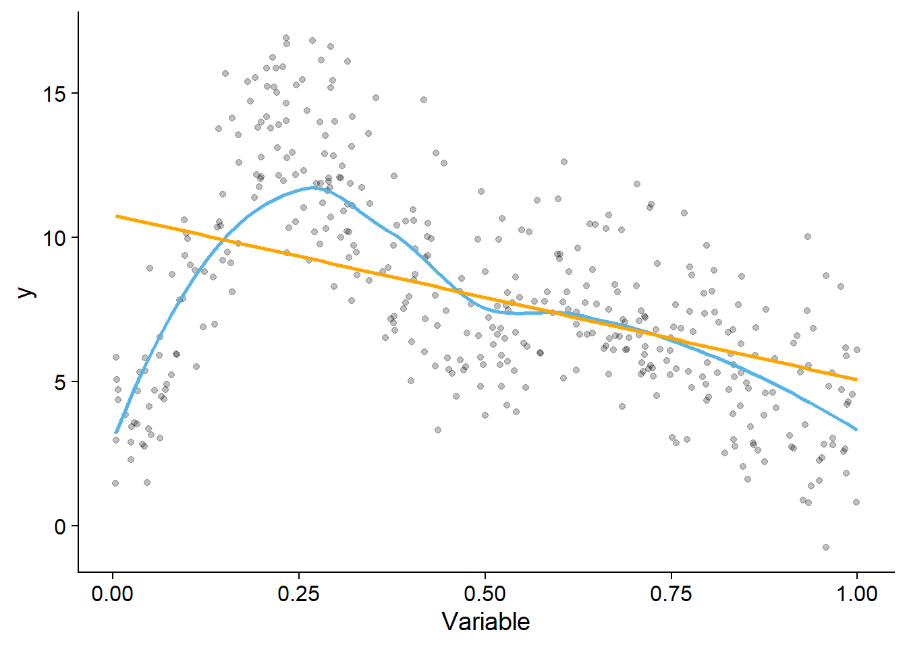
9 GAM’s vs GLM’s
This was one of the questions that was submitted. And one that has no straightforward answer. At least from me (I hate straightforward answers in statistics).
As George Box Box (1976) said in his 1976 paper “Science and Statistics”: “All models are wrong . . ., the practical question is how wrong do they have to be to not be useful”. My interpretation of this is: all models are wrong. It is important to know 1) how they are wrong, 2) how wrong they are, and 3) how useful they are. This is the reason I always have students read Tredennick et al. (2021) “A practical guide to selecting models for exploration, inference, and prediction in ecology”. That is also why I do not give “rules” for when to run each test. Remember, even when simulating data in the most perfect conditions, our data is never perfectly normal, linear, or homoscedastic. We are always breaking assumptions. So, it is up to us to decide what model to use, and that is based on the usefulness of the model given our research question.
Whenever we build a statistical model, we also face trade-offs. A big one is between flexibility and interpretability. When we talk about models being useful, interpretability is a thing that makes models VERY useful. So, it should always be taken into account. GLM’s are easier to interpret and easier for the reader to understand that GLM’s. My philosophy is to always do the simplest model that will be useful answering my research question. For example, I won’t be running a complex Bayesian hierarchical model, if I can instead simply run a t-test. There is nothing wrong with running “basic” statistical tests. On the contrary, I think that a lot of complexity in models ran are the result of posturing more than logic, and cause more troubles than they solve, and make the model less useful. Dr. Brian McGill coined the term statistical machismo, and writes often about it on the dynamic ecology blog. By the way, I highly recommend that blog, even if you are not an ecologist. I also recognize that this assignment is looking more and more like a blog post, and less like an assignment, so I’ll reel back. The whole point is, GLM’s are easier to interpret, which is a big deal! I would never run a gam if I could answer a question with a glm.
GAM’s offer us more flexibility. And they are better at predicting complex relationships. We often need to model more complex phenomena than can be represented by linear relationships. So we can use GAM’s. Main problem with GAMs is that we don’t end up with easy to interpret parameters (\(\beta's\)). If we went an even more flexible and complex route, we could run machine learning models, like boosted regression trees or neural networks, that can be very good at making predictions of complex relationships. The problem is that they tend to need lots of data, are quite difficult to interpret, and one can rarely make inferences from the model results.
In short
GLM’s are easier to interpret. They are great for inference and for linear relationships. I recommend running a GLM whenever possible, and only do GAM’s when the complexity of the relationships calls for it (e.g. the relationships between variables are complex and non-linear)
Essentially, it is useful when your data looks like this:
Ask yourself: which of the two models (represented by the blue line and the orange line) do you think is more useful?
Some people really like the scatterplot function in the car package to explore the dataset initiailly:
library(car)
scatterplot(y~Variable, data= dat2)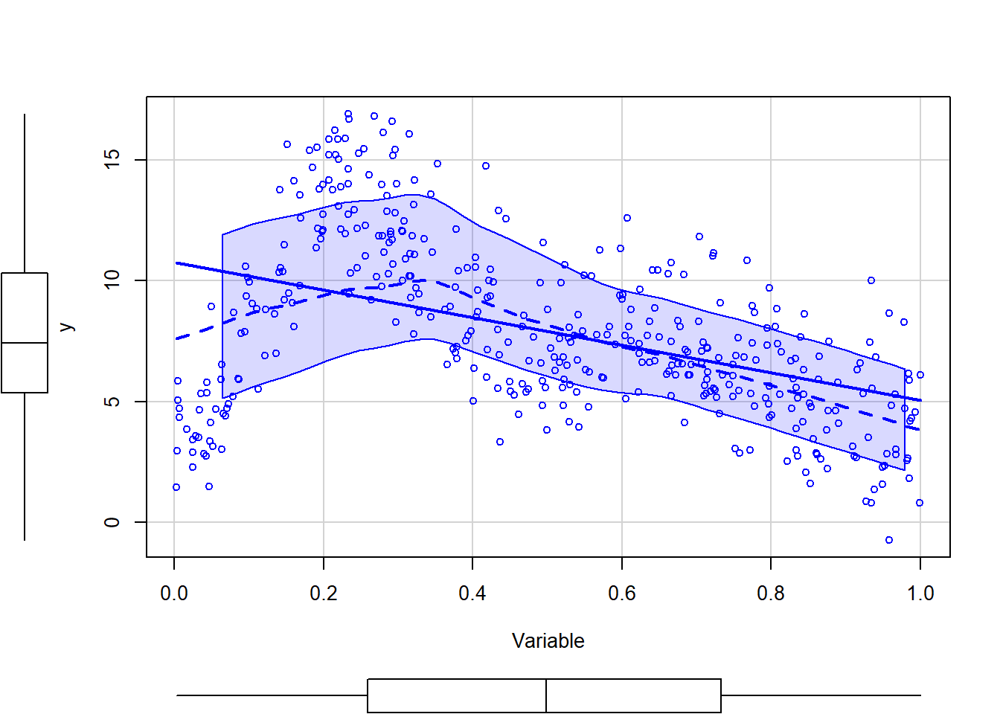
I prefer to use the preloaded ggplot geom_smooth functions for a quick a dirty initial look at the data (but I do not recommend to use these functions for a more “formal” data analysis:
ggplot(data=dat2,aes(x = Variable, y = y)) +
geom_point(alpha = .25, color = 'black') +
geom_smooth(aes(), color = '#56B4E9', se = F) +
geom_smooth(method = lm,color="orange", se=F) +
theme_cowplot() 
FYI: if your system has temporal or spatial autocorrelation, then GAM’s are usually the way to go!
9.1 Example
We will work with the same example as the slideshow.
You were tasked with running a model with Season (season should be a factor!), Sample Depth (smooth), and relative depth (linear). We can run that model, and check the basis dimensions with:
isit$Season<-as.factor(isit$Season)
model_seasonsrel <- gam(Sources ~ Season + s(SampleDepth) +RelativeDepth, data = isit,
method = "REML")
k.check(model_seasonsrel) k' edf k-index p-value
s(SampleDepth) 9 8.699146 1.103929 1And you can change the dimensions using:
model_seasonsrel2 <- gam(Sources ~ Season + s(SampleDepth, k=20) +RelativeDepth, data = isit,
method = "REML")You can use AIC to test the models. I generally don’t change the k in the models I run.
Run that same again model, but make relative depth a “smooth” term.
Choose whether is best to keep relative depth as a linear or a smooth term. You can use AIC to help you answer this question. You can also look at the plots, and the EDF.
9.2 Interactions
If we want an interactive term between season and sample depth, (with season being a linear, categorical term), this is how we would do it:
season_interact <- gam(Sources ~ Season +
s(SampleDepth, by=Season) +
s(RelativeDepth),
data = isit, method = "REML")
summary(season_interact)
Family: gaussian
Link function: identity
Formula:
Sources ~ Season + s(SampleDepth, by = Season) + s(RelativeDepth)
Parametric coefficients:
Estimate Std. Error t value Pr(>|t|)
(Intercept) 7.8593 0.5442 14.442 < 2e-16 ***
Season2 4.7589 0.6246 7.619 7.57e-14 ***
---
Signif. codes: 0 '***' 0.001 '**' 0.01 '*' 0.05 '.' 0.1 ' ' 1
Approximate significance of smooth terms:
edf Ref.df F p-value
s(SampleDepth):Season1 6.839 7.552 95.119 <2e-16 ***
s(SampleDepth):Season2 8.745 8.966 154.474 <2e-16 ***
s(RelativeDepth) 6.987 8.056 6.821 <2e-16 ***
---
Signif. codes: 0 '***' 0.001 '**' 0.01 '*' 0.05 '.' 0.1 ' ' 1
R-sq.(adj) = 0.801 Deviance explained = 80.7%
-REML = 2464.1 Scale est. = 27.348 n = 789We can see that we obtain a sample depth for each season.
We can plot all of the effects:
plot(season_interact, all.terms = TRUE)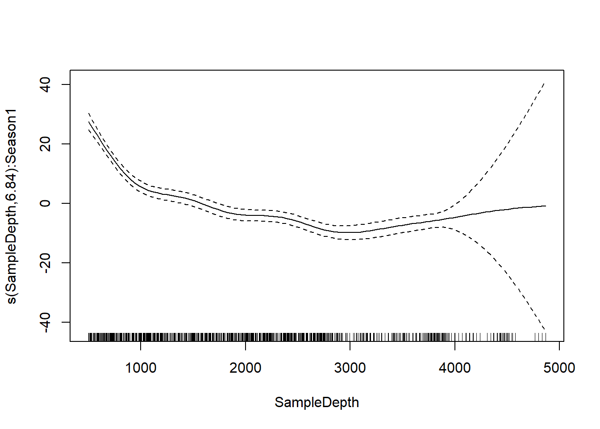
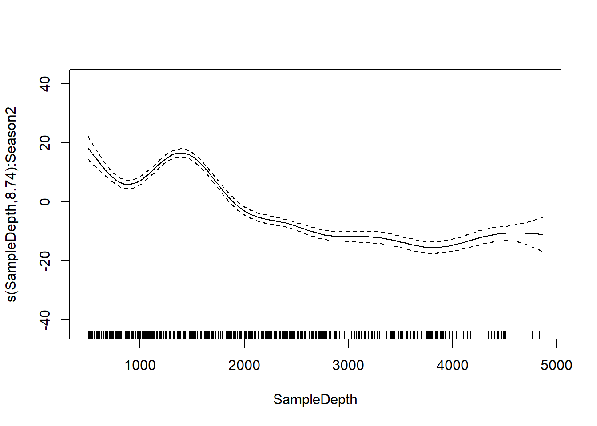
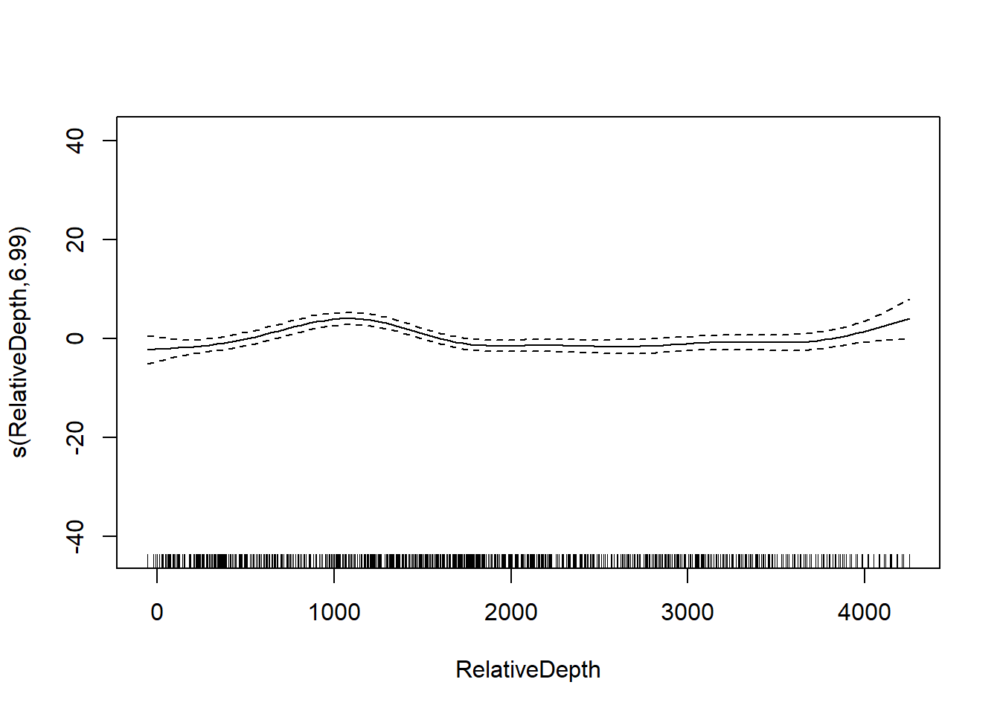
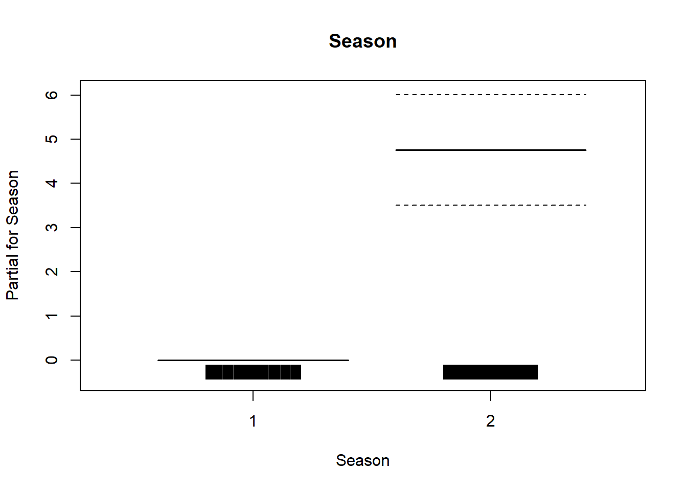
We canalso plot the relationship between season, sample depth and bioluminiscence using the mgcv built-in function vis.gam
vis.gam(season_interact, n.grid=70, lwd=0.3)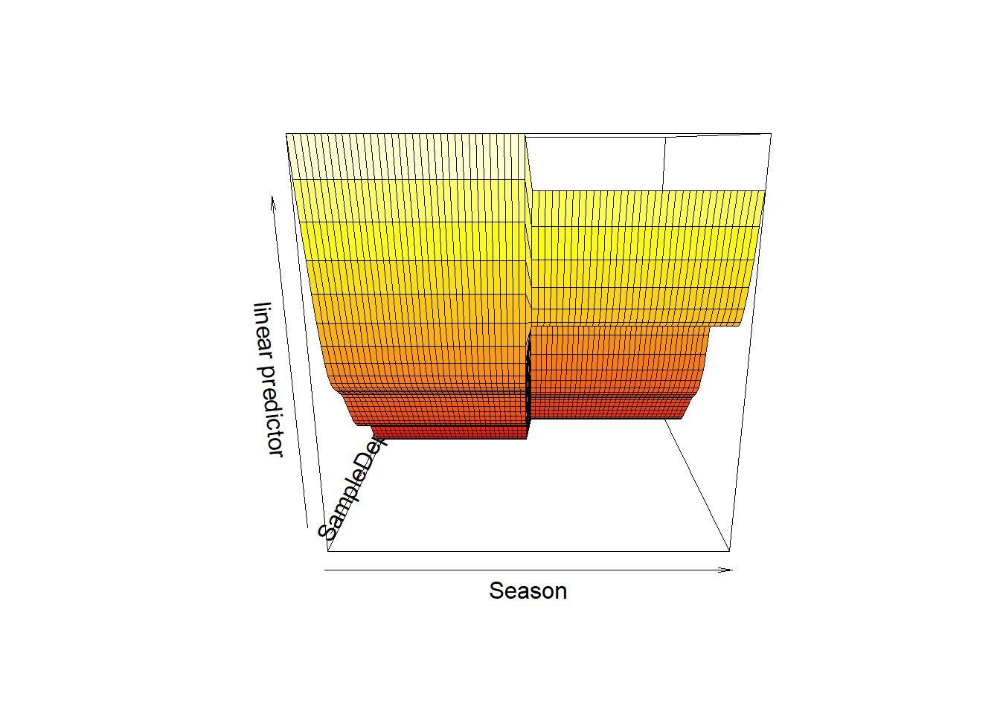
We can rotate it using the theta arhument:
vis.gam(season_interact, n.grid=60, lwd=0.3, theta=120)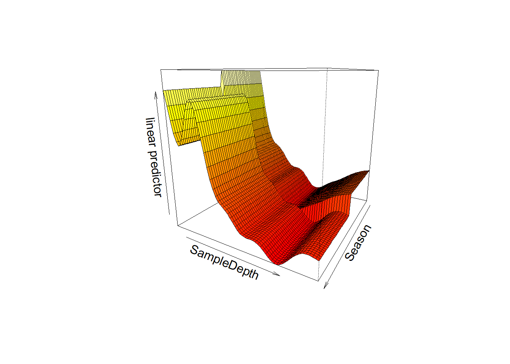
These plots can be useful, but I am not a fan of 3-d plots.
Finally, let’s look at nteraction between two smooth variables. This is how you would run it:
interaction <- gam(Sources ~ Season + s(SampleDepth, RelativeDepth),
data = isit, method = "REML")
summary(interaction)
Family: gaussian
Link function: identity
Formula:
Sources ~ Season + s(SampleDepth, RelativeDepth)
Parametric coefficients:
Estimate Std. Error t value Pr(>|t|)
(Intercept) 8.0774 0.4235 19.071 < 2e-16 ***
Season2 4.7208 0.6559 7.197 1.48e-12 ***
---
Signif. codes: 0 '***' 0.001 '**' 0.01 '*' 0.05 '.' 0.1 ' ' 1
Approximate significance of smooth terms:
edf Ref.df F p-value
s(SampleDepth,RelativeDepth) 27.13 28.77 93.92 <2e-16 ***
---
Signif. codes: 0 '***' 0.001 '**' 0.01 '*' 0.05 '.' 0.1 ' ' 1
R-sq.(adj) = 0.784 Deviance explained = 79.2%
-REML = 2501.7 Scale est. = 29.632 n = 789Finally, we can plot it:
vis.gam(interaction, view = c("SampleDepth", "RelativeDepth"),
theta = 120, n.grid = 50, lwd = .3)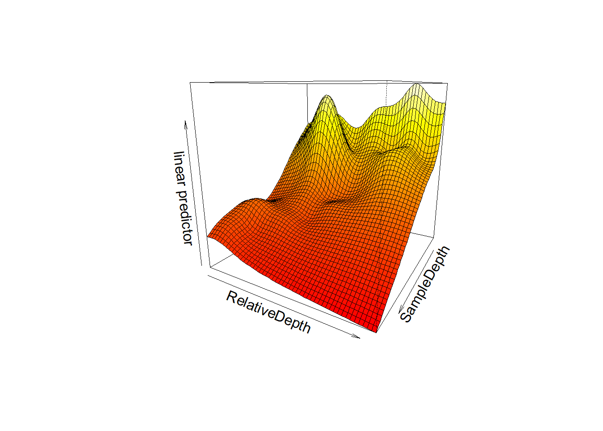
Using AIC try to 1) figure out what the best model is, 2) see if you could benefit from changing k.
9.3 Example 2
We will work with a vegetation dataset.
veg<-read.csv("data/Vegetation2.csv")
head(veg) SR ROCK LITTER BARESOIL SprTmax Time FallPrec Transect
1 8 27 30 26 15.77 1958 30.22 1
2 6 26 20 28 15.21 1962 99.56 1
3 8 30 24 30 12.76 1967 43.43 1
4 8 18 35 16 14.00 1974 54.86 1
5 10 23 22 9 14.33 1981 24.38 1
6 7 26 26 23 16.91 1994 10.16 1This dataset contains the following variables:
- SR: Species Richness
- ROCK: Rock content
- BARESOIL: bare soil content
- LITTER: litter content
- Fallprec: Fall rain
- SprTmax: Max temperature in the Spring
- Time: Year of transect
- Transect: Transect number
Species richness will be our response variable, and ROCK will be the explanatory variable.
First, let’s explore the relationship between our explanatory and response variables. We can use the scatterplot
scatterplot(SR~ROCK, data= veg)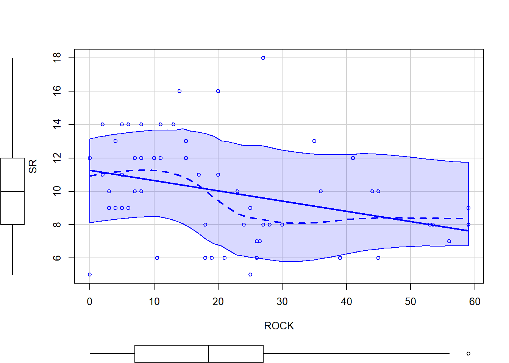
In this case, the plot isn’t super useful
ggplot(data=veg,aes(x = ROCK, y = SR)) +
geom_point(alpha = .25, color = 'black') +
geom_smooth(aes(), color = '#56B4E9', se = F) +
geom_smooth(method = glm, method.args = list(family = "poisson"),color="orange", se=F) +
theme_cowplot() `geom_smooth()` using method = 'loess' and formula = 'y ~ x'
`geom_smooth()` using formula = 'y ~ x'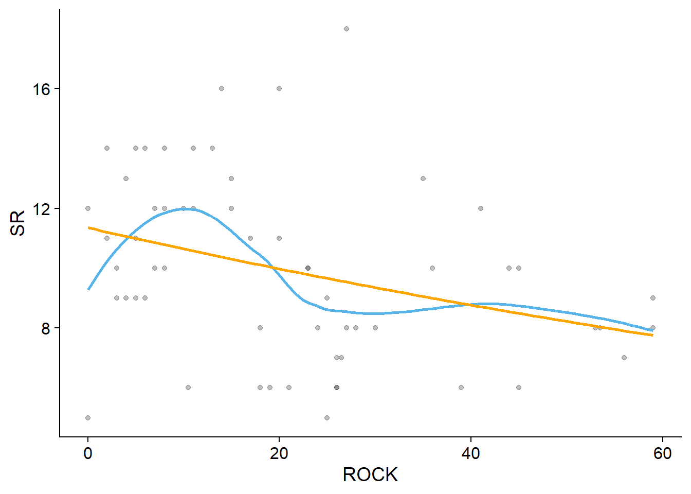
Base on this exploratory plots, do you think a GLM or a GAM is more appropriate?
Let’s run both a GAM and a GLM
gamveg<-gam(SR~s(ROCK), data=veg, family = poisson())glmveg<-glm(SR~ROCK, data=veg, family = poisson())Now, use AIC, the summaries, \(R^2\) and decide which of the two models is better.
You can estimate the \(R^2\) of a glm using:
with(summary(glmveg), 1 - deviance/null.deviance)[1] 0.1099763Also, this may be a good time to think whether any of the two models is acceptable. If not, you could explore whether including other variables is good. Maybe time and transect have a strong effect on the response variable. And those might be non-independent. Ask yourself, if this was your thesis data, and your question is to see the effect of rock cover on richness, what would you do?
Here, I run an example of running a Generalized Additive Mixed Model in mgvc . Think of this as combining a mixed effects model and a gam. This is how you run it:
veg$Transect<-as.factor(veg$Transect)
gammveg<-gamm(SR~s(ROCK),random = list(Transect=~1), data=veg, family = poisson())
Maximum number of PQL iterations: 20 iteration 1iteration 2iteration 3And the result is a list with two objects:
gammveg$gam #a gam objectsimilar to the ones opbtained from running other gams
Family: poisson
Link function: log
Formula:
SR ~ s(ROCK)
Estimated degrees of freedom:
1 total = 2 gammveg$lme #an lme object. We estimate AIC from this objectLinear mixed-effects model fit by maximum likelihood
Data: data
Log-likelihood: -8.952885
Fixed: fixed
X(Intercept) Xs(ROCK)Fx1
2.28513390 -0.09530621
Random effects:
Formula: ~Xr - 1 | g
Structure: pdIdnot
Xr1 Xr2 Xr3 Xr4 Xr5
StdDev: 1.616984e-05 1.616984e-05 1.616984e-05 1.616984e-05 1.616984e-05
Xr6 Xr7 Xr8
StdDev: 1.616984e-05 1.616984e-05 1.616984e-05
Formula: ~1 | Transect %in% g
(Intercept) Residual
StdDev: 0.1451011 1
Variance function:
Structure: fixed weights
Formula: ~invwt
Number of Observations: 58
Number of Groups:
g Transect %in% g
1 8 To obtain the AIC we can do the following:
AIC(gammveg$lme)[1] 25.90577This is a MUCH better model than before! (apparently)
And to explore the object, we do the following:
summary(gammveg$gam)
Family: poisson
Link function: log
Formula:
SR ~ s(ROCK)
Parametric coefficients:
Estimate Std. Error t value Pr(>|t|)
(Intercept) 2.285 0.067 34.1 <2e-16 ***
---
Signif. codes: 0 '***' 0.001 '**' 0.01 '*' 0.05 '.' 0.1 ' ' 1
Approximate significance of smooth terms:
edf Ref.df F p-value
s(ROCK) 1 1 2.574 0.114
R-sq.(adj) = 0.091
Scale est. = 1 n = 58Well… the edf is 1. So, we would be better of doing a mixed model and forgetting about running GAMS in this dataset. However, our \(R^2\) is 0.091, and the rock variable seems to not be significant. Again, oftentimes our data will look like this. And we need to make (not easy) decision on how to analyze it and present it. If you are curious, you can explore more of the dataset. However, you won’t fin many meaningful relationships no matter what you run. A reminder that the experimental design, and the actual system are more important than the statistical method!